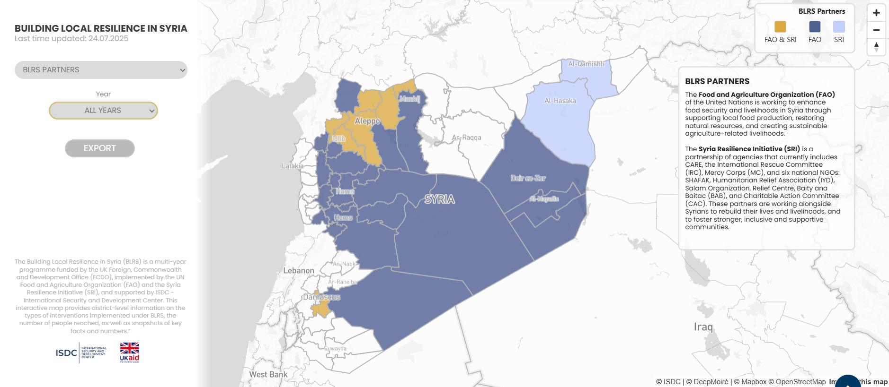
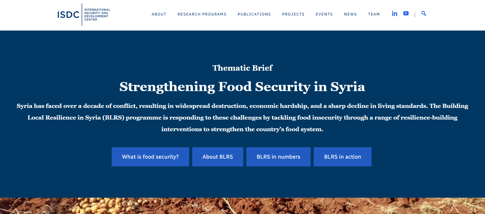

ISDC · RESEARCH AND COMMUNICATION ASSISTANT
Building Local Resilience in Syria (BLRS)
Impact evaluation, household data analysis and research communication

Research context
The Building Local Resilience in Syria (BLRS) programme is an FCDO-funded initiative supporting resilience, livelihoods and food security in conflict-affected Syria. At the International Security and Development Center (ISDC), I supported its RCT-based impact evaluation as a Research and Communication Assistant.
My role and research contributions
- Household panel data: cleaned, merged, validated and harmonized more than 80,000 household observations in R and Excel, contributing to reproducible analytical workflows.
- Measurement and analysis: constructed food-security measures including the Food Insecurity Experience Scale (FIES) and Food Consumption Score (FCS); supported descriptive analysis and interpretation.
- Evaluation design: contributed to the development and revision of the Theory of Change, aligning implementing partners’ activities, indicators, expected outcomes and data requirements.
- Research coordination: worked across researchers and implementation partners to translate evaluation requirements into usable data requests and research outputs.
- Research communication: co-authored a thematic food-security brief and developed an internal R Shiny application; conceptualized the public interactive map and coordinated its production with a graphic designer.
Selected research outputs
Interactive BLRS map
I contributed to the map’s concept, research framing and content, coordinating with the designer responsible for technical production.

Food-security thematic brief
Co-authored a thematic brief combining food-security indicator construction, quantitative analysis, literature review and evidence synthesis.
